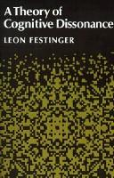

A Theory of Cognitive Dissonance
Book·Leon Festinger, 1957·认知失调理论

Festinger proposes that when a person's beliefs and behavior contradict each other, they feel discomfort and look for ways to reduce it.
- Author
- Leon Festinger
- Year
- 1957
- Difficulty
- Intermediate
- Kind
- Primary text
- Schools
- Cognitive Dissonance
- Core theories
- Cognitive Dissonance Theory, Forced Compliance Study
Editions
- Chinese edition 《认知失调理论》 [美]利昂·费斯汀格 · tr. 郑全全 · 浙江教育出版社 · 1999 Douban 8.3 (77 ratings) Douban page ↗
- English edition A Theory of Cognitive Dissonance Leon Festinger · Stanford University Press paperback · 1962 Open Library ↗